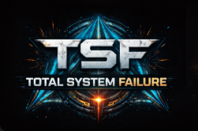

Ship Prototype
Current development is focused on the ship itself as a room-and-door simulation in Godot, forming the foundation for future systems, hazards, crew interaction, and encounter flow.

Guide humanity’s final colony ship through a hostile universe, salvage what can be saved, and reach the last destination with enough people, resources, and discoveries to give humanity a future.
TSF is a colony ship roguelike built around survival, exploration, and long-term consequence. The ship is not just a vehicle or combat board — it is humanity’s last chance. Each run is about navigating star systems, scavenging ruined infrastructure, facing hostile encounters, and managing the fragile balance between immediate survival and the future of the colony.
Combat matters, but the wider run is driven by exploration, salvage, difficult choices, and what the ship carries forward to the final destination.
Points of interest shape reward, danger, discovery, and the overall character of each journey through the stars.
Reaching the end is only part of the story. Ending quality depends on survival, reserves, discoveries, and what kind of future remains for humanity.
Current development is focused on the ship itself as a room-and-door simulation in Godot, forming the foundation for future systems, hazards, crew interaction, and encounter flow.
The prototype foundation centers on crew movement, doors, room interaction, damage states, and a structure that can later support power, events, installed systems, resources, and combat.
The ship uses an intentional room-and-corridor presentation, with ship state and crew activity visible on-screen rather than abstracted away.
Project state tracking and handoff structure were formalised to keep prototype development moving cleanly between work sessions.
Early prototype work is focused on the colony ship’s internal structure, movement foundations, and the systems required for room-based gameplay.
The project now has a live roadmap and tracker page to follow development progress and future milestones as TSF moves toward its prototype goals.